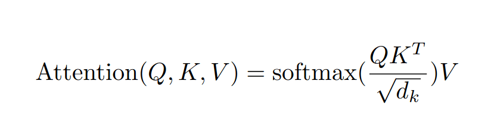
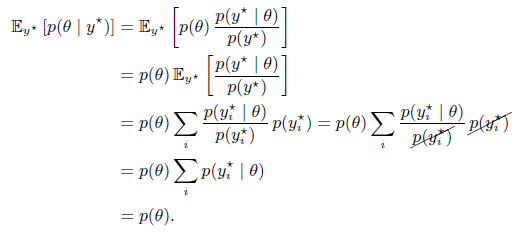
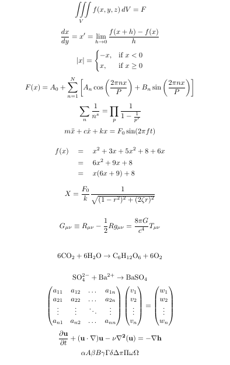
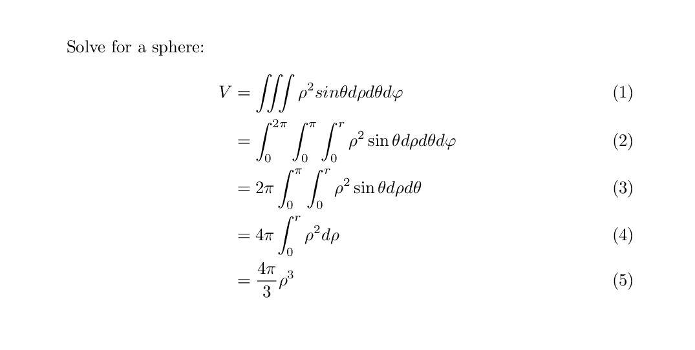
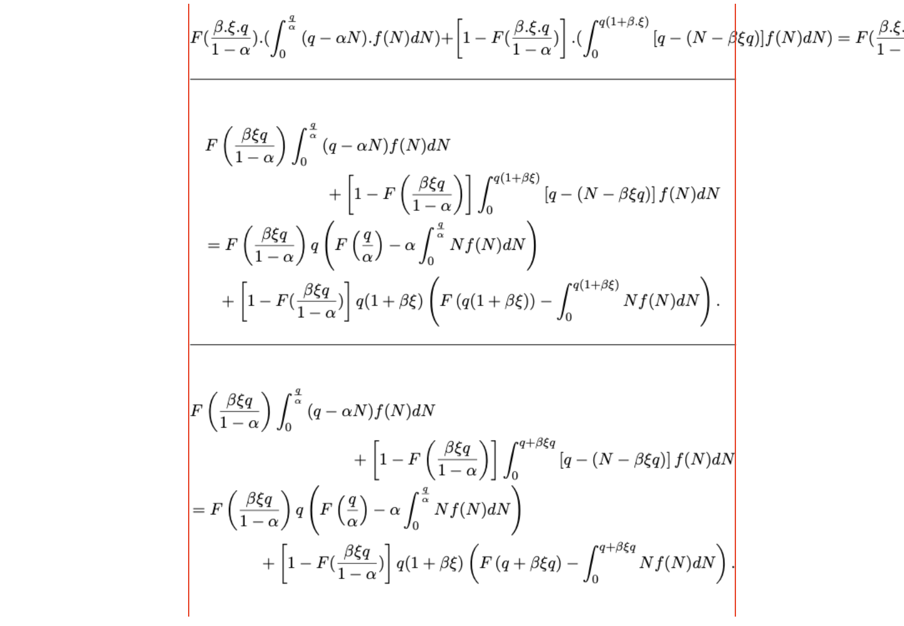
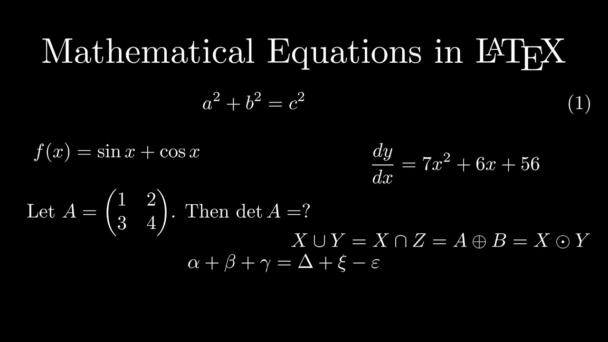
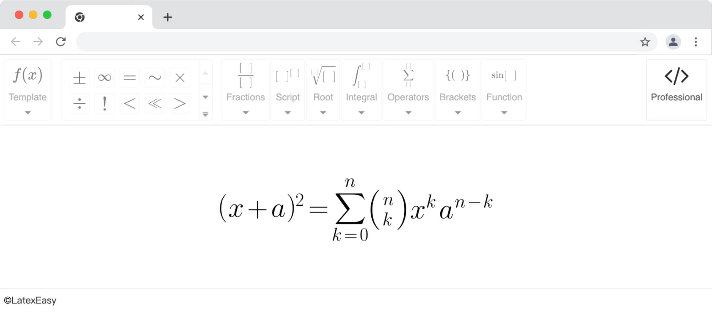
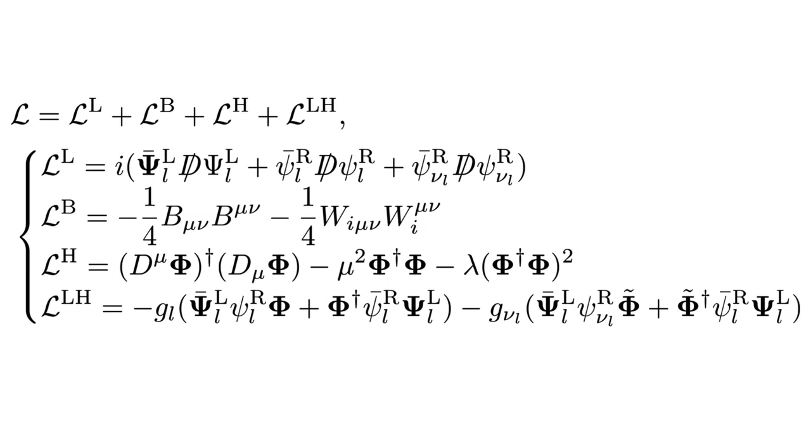

Images in this folder → plugins/mathocr (Pix2Text models, offline) → LaTeX → plugins/math (MathJax + MathCAT, with the short-word rules) → words.

| LaTeX (rendered, then source) | Words (read aloud, MathCAT) | |
|---|---|---|
| display 0.87 | \mathrm{Attention} ( Q , K , V )=\mathrm{softmax} ( \cfrac{Q K^{T}} {\sqrt{d_{k}}} ) V | Attention of Q, K, V, equals, softmax of Q K transpose over the square root of d sub k, V |

| LaTeX (rendered, then source) | Words (read aloud, MathCAT) | |
|---|---|---|
| display 0.94 | \begin{aligned} {\mathbb E_{y^{*}} \left[ p ( \theta\mid y^{*} ) \right]} & {{}=\mathbb E_{y^{*}} \left[ p ( \theta) \, \frac{p ( y^{*} \mid\theta )} {p ( y^{*} )} \right]} \\ {} & {{}=p ( \theta) \, \mathbb E_{y^{*}} \left[ \frac{p ( y^{*} \mid\theta )} {p ( y^{*} )} \right]} \\ {} & {{}=p ( \theta) \sum_{\imath} \frac{p ( y_{\imath}^{*} \mid\theta )} {p ( y_{\imath}^{*} )} \, p ( y_{\imath}^{*} )=p ( \theta) \sum_{\imath} \frac{p ( y_{\imath}^{*} \mid\theta )} {p ( y_{\imath}^{*} )} \, p ( y_{\imath}^{*} )} \\ {} & {{}=p ( \theta) \sum_{\imath} p ( y_{\imath}^{*} \mid\theta )} \\ {} & {{}=p ( \theta) .} \\ \end{aligned} | the expectation over y star of p of theta given y star, equals, the expectation over y star of p of theta, p of y star given theta, over, p of y star, equals, p of theta, the expectation over y star of p of y star given theta, over, p of y star, equals, p of theta, the sum over ı of, p of y sub ı, super times, given theta, over, p of y sub ı, super times, p of y sub ı, super times, equals, p of theta, the sum over ı of, p of y sub ı, super times, given theta, over, p of y sub ı, super times, p of y sub ı, super times, equals, p of theta, the sum over ı of, p of y sub ı, super times, given theta, equals p of theta, dot |

| LaTeX (rendered, then source) | Words (read aloud, MathCAT) | |
|---|---|---|
| display 0.93 | \iiint_{V} f ( x , y , z ) \, d V=F | the triple integral over V of, f of x, y, z, d V, equals F |
| display 0.93 | \frac{d x} {d y}=x^{\prime}=\operatorname*{lim}_{h \to0} \frac{f ( x+h )-f ( x )} {h} | d x over d y, equals x prime, equals, the limit as h approaches 0, of, f of x plus h, minus f of x, over h |
| display 0.94 | | x |=\begin{cases} {-x ,} & {\mathrm{if~} x < 0} \\ {x ,} & {\mathrm{if~} x \geq0} \\ \end{cases} | the absolute value of x, equals, negative x, if x is less than 0, x, if x, is greater than or equal to 0 |
| display 0.94 | F ( x )=A_{0}+\sum_{n=1}^{N} \left[ A_{n} \operatorname{cos} \left( \frac{2 \pi n x} {P} \right)+B_{n} \operatorname{sin} \left( \frac{2 \pi n x} {P} \right) \right] | F of x, equals, A sub 0, plus, the sum from n equals 1 to N of A sub n, cosine of 2 pi n x over P, plus, B sub n, sine of 2 pi n x over P |
| display 0.92 | \sum_{n} \frac{1} {n^{s}}=\prod_{p} \frac{1} {1-\frac{1} {p^{s}}} | the sum over n of, 1 over n to the s-th power, equals, the product over p of, 1, over, 1 minus 1 over p to the s-th power |
| display 0.91 | m \ddot{x}+c \dot{x}+k x=F_{0} \operatorname{sin} ( 2 \pi f t ) | m x double dot, plus c x dot, plus k x, equals, F sub 0, sine of 2 pi f t |
| display 0.93 | \begin{array} {l l l} {f ( x )} & {=} & {x^{2}+3 x+5 x^{2}+8+6 x} \\ {} & {=} & {6 x^{2}+9 x+8} \\ {} & {=} & {x ( 6 x+9 )+8} \\ \end{array} | f of x equals, x squared plus 3 x plus 5 x squared, plus 8 plus 6 x, equals, 6 x squared, plus 9 x plus 8, equals, x times, open paren, 6 x plus 9, close paren, plus 8 |
| display 0.94 | X={\frac{F_{0}} {k}} {\frac{1} {\sqrt{( 1-r^{2} )^{2}+( 2 \zeta r )^{2}}}} | X equals, F sub 0, over k, 1, over times, the square root of 1 minus r squared squared, plus, open paren, 2 zeta r, close paren squared |
| display 0.93 | G_{\mu\nu} \equiv R_{\mu\nu}-\frac{1} {2} R g_{\mu\nu}=\frac{8 \pi G} {c^{4}} T_{\mu\nu} | G sub mu nu end sub, is identical to, R sub mu nu end sub, minus, 1 over 2 R, g sub mu nu end sub, equals, 8 pi G over c to the fourth power, T sub mu nu end sub |
| display 0.88 | 6 \mathrm{C O_{2}}+6 \mathrm{H_{2} O} \to\mathrm {C_{6} H_{1 2} O_{6}}+6 \mathrm{O_{2}} | 6, C, O, sub 2, plus, 6, H, sub 2 O, reacts to form, C, sub 6 H sub 1 2, O, sub 6, plus 6 O, sub 2 |
| display 0.88 | \mathrm{S O_{4}^{2-}+B a^{2+} \to B a S O_{4}} | S times, O sub 4, raised to the 2 minus power, plus, B times a raised to the 2 plus power, right arrow, Ba SO sub 4 |
| display 0.94 | \left( \begin{matrix} {a_{1 1}} & {a_{1 2}} & {\dots} & {a_{1 n}} \\ {a_{2 1}} & {a_{2 2}} & {\dots} & {a_{2 n}} \\ {\vdots} & {\vdots} & {\ddots} & {\vdots} \\ {a_{n 1}} & {a_{n 2}} & {\dots} & {a_{n n}} \\ \end{matrix} \right) \left( \begin{matrix} {v_{1}} \\ {v_{2}} \\ {\vdots} \\ {v_{n}} \\ \end{matrix} \right)=\left( \begin{matrix} {w_{1}} \\ {w_{2}} \\ {\vdots} \\ {w_{n}} \\ \end{matrix} \right) | the matrix from a sub 1 1 to a sub n n, the vector from v sub 1 to v sub n, equals, the vector from w sub 1 to w sub n |
| display 0.88 | \frac{\partial\mathbf {u}} {\partial t}+( \mathbf{u} \cdot\nabla ) \mathbf{u}-\nu\nabla^{2} ( \mathbf{u} )=- \nabla\mathbf {h} | partial derivative bold u over partial derivative t, plus, open paren, bold u dot product nabla, close paren, times bold u, minus, nu Laplacian of bold u, equals, negative gradient of bold h |
| display 0.88 | \alpha A \beta B \gamma\Gamma \delta\Delta \pi\Pi \omega\Omega | alpha A beta B gamma capital gamma delta capital delta pi capital pi omega capital omega |

| LaTeX (rendered, then source) | Words (read aloud, MathCAT) | |
|---|---|---|
| display 0.95 | \begin{aligned} {V} & {{}=\iiint\rho^{2} s i n \theta d \rho d \theta d \varphi} \\ {} & {{}=\int_{0}^{2 \pi} \int_{0}^{\pi} \int_{0}^{r} \rho^{2} \operatorname{sin} \theta d \rho d \theta d \varphi} \\ {} & {{}=2 \pi\int_{0}^{\pi} \int_{0}^{r} \rho^{2} \operatorname{sin} \theta d \rho d \theta} \\ {} & {{}=4 \pi\int_{0}^{r} \rho^{2} d \rho} \\ {} & {{}=\frac{4 \pi} {3} \rho^{3}} \\ \end{aligned} | V, equals triple integral rho squared sine theta d rho d theta d phi, equals, the integral from 0 to 2 pi of, the integral from 0 to pi of, the integral from 0 to r of, rho squared sine theta d rho d theta d phi, equals 2 pi the integral from 0 to pi of, the integral from 0 to r of, rho squared sine theta d rho d theta, equals 4 pi the integral from 0 to r of, rho squared d rho, equals 4 pi over 3 rho cubed |

| LaTeX (rendered, then source) | Words (read aloud, MathCAT) | |
|---|---|---|
| display 0.89 | F ( \frac{\beta\cdot \xi\cdot q} {1-\alpha} ) . ( \int_{0}^{\frac{q} {\alpha}} ( q-\alpha N ) . f ( N ) d N )+\left[ 1-F ( \frac{\beta\cdot \xi\cdot q} {1-\alpha} ) \right] . ( \int_{0}^{q ( 1+\beta\cdot \xi)} [ q-( N-\beta\xi q ) ] f ( N ) d N )=F ( \frac{\beta\cdot \xi\cdot q} {1-\alpha} ) . | F of beta times xi times q, over 1 minus alpha, dot, times, open paren, the integral from 0 to q over alpha of q minus alpha N, dot, f of N, d N, close paren, plus, open bracket, 1 minus, F of beta times xi times q, over 1 minus alpha, close bracket, dot, times, open paren, the integral from 0 to q of 1 plus beta times xi of, open bracket, q minus, open paren, N minus beta xi q, close paren, close bracket, times f of N, d N, close paren, equals, F of beta times xi times q, over 1 minus alpha |
| display 0.91 | \begin{aligned} {{}} & {{} F \left( \frac{\beta\xi q} {1-\alpha} \right) \int_{0}^{\frac{q} {\alpha}} ( q-\alpha N ) f ( N ) d N} \\ {{}} & {{} \qquad\qquad \qquad+\left[ 1-F \left( \frac{\beta\xi q} {1-\alpha} \right) \right] \int_{0}^{q ( 1+\beta\xi )} \left[ q-( N-\beta\xi q ) \right] f ( N ) d N} \\ {{}} & {{}=F \left( \frac{\beta\xi q} {1-\alpha} \right) q \left( F \left( \frac{q} {\alpha} \right)-\alpha\int_{0}^{\frac{q} {\alpha}} N f ( N ) d N \right)} \\ {{}} & {{}+\left[ 1-F ( \frac{\beta\xi q} {1-\alpha} ) \right] q ( 1+\beta\xi ) \left( F \left( q ( 1+\beta\xi ) \right)-\int_{0}^{q ( 1+\beta\xi )} N f ( N ) d N \right) .} \\ \end{aligned} | table with 4 rows and 2 columns, row 1, column 1, empty, column 2, F of beta xi q, over 1 minus alpha, the integral from 0 to q over alpha of q minus alpha N f of N d N, row 2, column 1, empty, column 2, plus 1, the integral from 0 to q of 1 plus beta xi of q f of N d N, row 3, column 1, empty, column 2, equals F of beta xi q, over 1 minus alpha q of F, row 4, column 1, empty, column 2, plus 1 q of 1 plus beta xi F dot |
| display 0.89 | \begin{array} {l} {{F \left( \frac{\beta\xi q} {1-\alpha} \right) \int_{0}^{\frac{q} {\alpha}} ( q-\alpha N ) f ( N ) d N}} \\ {{\qquad\qquad \qquad\qquad+\left[ 1-F \left( \frac{\beta\xi q} {1-\alpha} \right) \right] \int_{0}^{q+\beta\xi q} \left[ q-( N-\beta\xi q ) \right] f ( N ) d N}} \\ {{=F \left( \frac{\beta\xi q} {1-\alpha} \right) q \left( F \left( \frac{q} {\alpha} \right)-\alpha\int_{0}^{\frac{\pi} {\alpha}} N f ( N ) d N \right)}} \\ {{\qquad\qquad+\left[ 1-F ( \frac{\beta\xi q} {1-\alpha} ) \right] q ( 1+\beta\xi ) \left( F \left( q+\beta\xi q \right)-\int_{0}^{q+\beta\xi q} N f ( N ) d N \right) .}} \end{array} | table with 4 rows and 1 columns, row 1, column 1, F of beta xi q, over 1 minus alpha, the integral from 0 to q over alpha of q minus alpha N f of N d N, row 2, column 1, plus 1, the integral from 0 to q plus beta xi q of q f of N d N, row 3, column 1, equals F of beta xi q, over 1 minus alpha q of F, row 4, column 1, plus 1 q of 1 plus beta xi F dot |

| LaTeX (rendered, then source) | Words (read aloud, MathCAT) | |
|---|---|---|
| display 0.45 | \mathrm{Mathematical~Equations~in~ETpeX} | Mathematical Equations in ETpeX |
| display 0.86 | a^{2}+b^{2}=c^{2} | a squared plus b squared, equals c squared |
| display 0.71 | f ( x )=\operatorname{sin} x+\operatorname{cos} x | f of x equals, sine x plus cosine x |
| display 0.55 | \begin{aligned} {\mathrm{Let~} A=\left( \begin{matrix} {1} & {2} \\ {3} & {4} \\ \end{matrix} \right)} & {{} \cdot\mathrm{~Then~det~} A=?} \\ {} & {{} X \cup Y=X \cap Z=A \oplus B=X \odot Y} \\ {} & {{} \alpha+\beta+\gamma=\Delta+\xi-\varepsilon} \\ \end{aligned} | Let A equals, the 2 by 2 matrix, row 1, 1, 2, row 2, 3, 4, times Then det A equals question mark, X union Y equals X intersection Z equals A circled plus B equals X circled dot operator Y, alpha plus beta plus gamma equals capital delta plus xi minus epsilon |

| LaTeX (rendered, then source) | Words (read aloud, MathCAT) | |
|---|---|---|
| inline 0.32 | \textcircled{C} \circ\textcircled {C} | \textcircled, C composed with \textcircled, C |
| inline 0.30 | \leftarrow\rightarrow \mathbf{C} | ←→ bold C |
| inline 0.27 | \lambda=\frac{1} {2} \vdots | lambda equals, 1 over 2 vertical ellipsis |
| inline 0.80 | f ( x ) | f of x |
| inline 0.50 | \frac{[ \phantom{+} ]} {[ \phantom{+} ]} | open bracket close bracket, times, over of open bracket close bracket |
| inline 0.74 | \int_{[-1 ]}^{[-1 ]} | the integral from negative 1 to negative 1 |
| inline 0.75 | \sum_{[ ]}^{[ ]} | the sum from open bracket close bracket to open bracket close bracket |
| inline 0.62 | \operatorname{sin} [ \mathbf{\xi}_{\mathbf{\xi}} ] | sine of xi sub xi |
| inline 0.81 | \langle/ \rangle | left angle bracket divided by right angle bracket |
| inline 0.41 | \div\; \mid< \; \ll> | divided by ∣< ≪> |
| inline 0.32 | \vee | or |
| inline 0.28 | \vee | or |
| inline 0.26 | \vee | or |
| inline 0.26 | r | r |
| inline 0.40 | \vee | or |
| inline 0.35 | \vee | or |
| inline 0.30 | \vee | or |
| display 0.93 | ( x \!+\! a )^{2} \!=\! \overset{n} {\underset{k \!=0} {\sum}} \! \binom{n} {k} x^{k} a^{n-k} | open paren x plus a, close paren squared, equals, quantity the sum over k equals 0 of with n above, n choose k x to the k-th power, times, a raised to the n minus k power |

| LaTeX (rendered, then source) | Words (read aloud, MathCAT) | |
|---|---|---|
| display 0.80 | \begin{cases} {\widetilde{\mathcal{L}}^{\mathrm{L}}=i ( \bar{\mathbf{\Psi}}_{l}^{\mathrm{L}} D \! \! \! \! D \Psi_{l}^{\mathrm{L}}+\bar{\psi}_{l}^{\mathrm{R}} D \! \! \! \! D \psi_{l}^{\mathrm{R}}+\bar{\psi}_{\nu_{l}}^{\mathrm{R}} D \! \! \! \! D \psi_{\nu_{l}}^{\mathrm{R}} )} \\ {\mathcal{L}^{\mathrm{B}}=- \frac{1} {4} B_{\mu\nu} B^{\mu\nu}-\frac{1} {4} W_{i \mu\nu} W_{i}^{\mu\nu}} \\ {\mathcal{L}^{\mathrm{H}}=( D^{\mu} \mathbf{\Phi} )^{\dagger} ( D_{\mu} \mathbf{\Phi} )-\mu^{2} \mathbf{\Phi}^{\dagger} \mathbf{\Phi}-\lambda( \mathbf{\Phi}^{\dagger} \mathbf{\Phi} )^{2}} \\ {\mathcal{L}^{\mathrm{LH}}=- g_{l} ( \bar{\mathbf{\Psi}}_{l}^{\mathrm{L}} \psi_{l}^{\mathrm{R}} \mathbf{\Phi}+\mathbf{\Phi}^{\dagger} \bar{\psi}_{l}^{\mathrm{R}} \mathbf{\Psi}_{l}^{\mathrm{L}} )-g_{\nu_{l}} ( \mathbf{\bar{\Psi}}_{l}^{\mathrm{L}} \psi_{\nu_{l}}^{\mathrm{R}} \mathbf{\tilde{\Phi}}+\mathbf{ | (no words) |